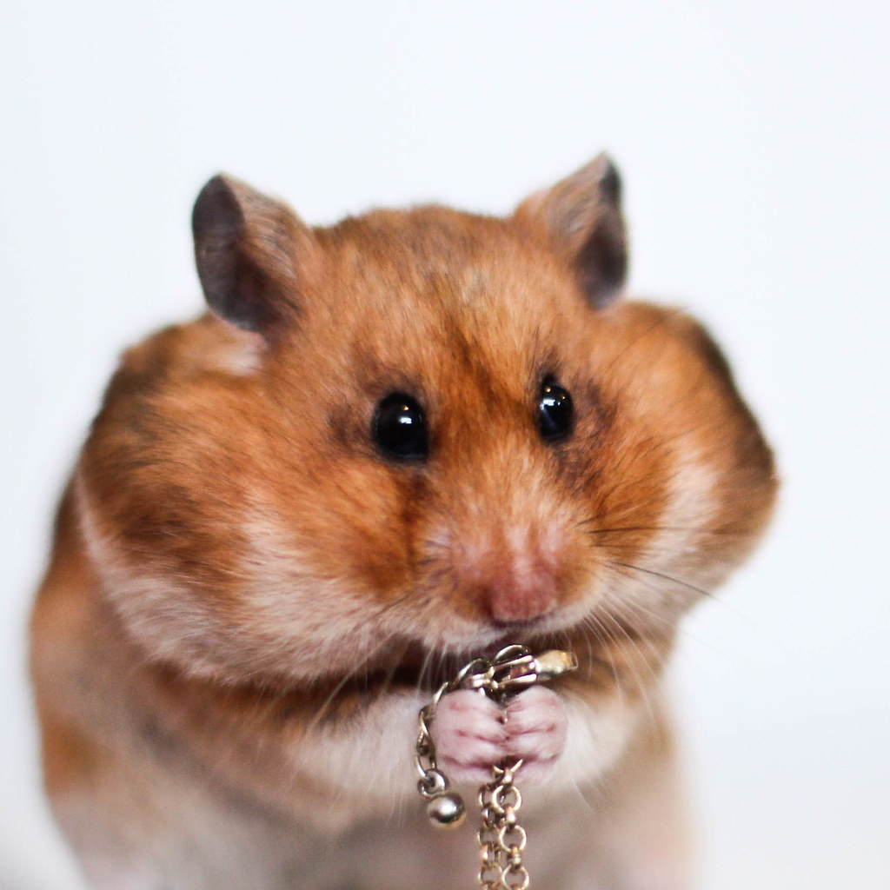

CUTEST HAMSTER EVER
- Breed
- Age
- Favorite Toy
- Average Sleeping Time
- Owner Name
Pet Stats

Caring for Pet Hamsters
If you are thinking about getting a pet hamster for you or a child it is important that you know how to choose one, what supplies you need, and how to feed and care for your new pet. Hamsters are typically low-maintenance pets but proper care is essential to keeping it happy and healthy. Hamsters are popular pets for children and adults alike. They are small rodents that typically live about two years and are usually best if housed alone. Hamsters come in a variety of colors and breeds and different breeds are known for distinctive traits.
- Chinese Hamsters - These small hamsters are not as common as other kinds of hamsters. Many people often mistake them for dwarf hamsters but they are not true dwarfs. They only grow to be 4 inches long.
- Dwarf Hamsters - There are several varieties of dwarf hamsters, such as Roborovskis and Russians, and they're similar to Chinese hamsters but much more commonly found in pet stores.
- Syrian Hamsters - Syrian hamsters come in several color variations and go by different names, such as goldens, panda, and teddy bears. They are much larger than dwarf and Chinese hamsters and are the most commonly seen type of hamster.